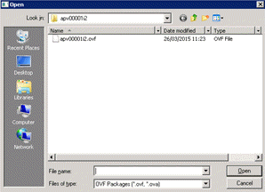
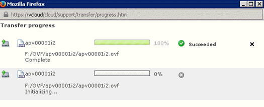
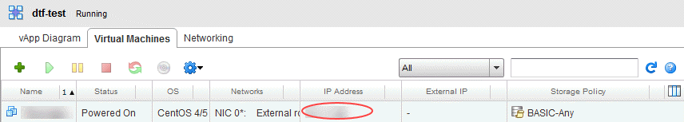
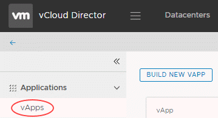

How to use the Data Transfer Facility
Overview
There are many ways to transfer data directly to your environment using UKCloud's Data Transfer Facility. This guide explains how to set up the two most commonly used methods:
- Transferring virtual machines (VMs)
- Transferring data
Transferring virtual machines
To transfer VM templates to the UKCloud platform you can:
- Use the vCloud Director UI
- Use the OVF Tool
Use the vCloud Director UI
Log in to the UKCloud Portal using the Firefox browser on the UKCloud-provided computer.
For more detailed instructions, see the Getting Started Guide for the UKCloud Portal.
In the navigation panel, expand VMware Cloud and then select the compute service to which you want to transfer the VMs.
On the vCloud Director tab, enter your password and then click Confirm.
Click Add vApp from OVF.

Select the Local file radio button.
Click Browse and locate the local path that contains the OVF file you want to upload, select the file and click Open.

Click Next and then Finish.
You can monitor the progress of the upload via the task window.

Use the OVF Tool
The OVF Tool is useful if you want to script or schedule an import.
To run a simple transfer, first you'll need your API username, which you can find on the UKCloud Portal.
For more information, see How to access vCloud Director through the vCloud API.
Open a PowerShell command prompt and format the OVF Tool command as follows, substituting the parameters as appropriate:
& "c:\\Program Files\VMware\VMware OVF Tool\ovftool.exe" <path_to_ovf> 'vcloud://<api_username>:<password>@vcd.portal.ukcloud.com/?org=<org_name>&vapp=<new_vapp_name>
Transferring data
If you already have VMs running in the UKCloud environment and want to ingest existing data, the two most common ways to achieve this are:
- Use SCP/SFTP
- Use FTPS
Use SCP/SFTP
The data you transfer is encrypted between the Data Transfer Facility PC and the VM running on the UKCloud compute platform.
Set up your VM
You need to use a Linux machine to set up the transfer of data over SCP/SFTP. If you don't already have a server running SSH, you can use a UKCloud Linux template.
Set up your network
You need to create the following firewall and NAT rules.
Firewall rules
| Name | Source | Protocol | Source port | Destination | Translated port |
|---|---|---|---|---|---|
| SCP | 37.26.88.73 | TCP | Any | Public IP | 22 |
NAT rules
| Applied on | External IP | Protocol | Source port | Internal IP | Translated port |
|---|---|---|---|---|---|
| nft... | Public IP | TCP | 22 | FTPS server private IP | 22 |
Use FTPS
FTPS provides secure transfer using FTP and SSL. The data you transfer is encrypted between the Data Transfer Facility PC and the VM running on the UKCloud compute platform.
Using FTPS in the Flex-based UI in vCloud Director 8.20
Log in to the UKCloud Portal.
For more detailed instructions, see the Getting Started Guide for the UKCloud Portal
In the navigation panel, expand VMware Cloud and then select the compute service to which you want to transfer the VMs.
On the vCloud Director tab, enter your password and then click Confirm.
Select the the My Cloud tab.

Click the green + sign to add a new virtual application (vApp) from a template.

From the Look in list, select Public Catalogs, then select the All Templates option.
In the search field, enter ftps and run the search.
Select the Skyscape_CentOS_6_FTPS_v1.0.0 template and click Next.

Enter a Name for the vApp, choose the Virtual Datacenter you want to deploy to and then click Next.
On the Configure Resources page, click Next to accept the default settings.
On the Configure Networking page, from the list of Networks, select the network you want to deploy to and click Next.
Note
The network you select must be connected to the internet.
On the Customize Hardware page, click Next to accept the default settings.
On the Ready to Complete page, select the Power on vApp after this wizard is finished check box at the bottom of the page, then click Finish.
When the deployment is complete, open the vApp and take note of the private IP address.

Next you need to:
Using FTPS in the HTML5 tenant portal in vCloud Director 9.1
Log in to the UKCloud Portal.
For more detailed instructions, see the Getting Started Guide for the UKCloud Portal
In the navigation panel, expand VMware Cloud and then select the compute service to which you want to transfer the VMs.
On the vCloud Director tab, enter your password and then click Confirm.
Go to the VDC and select vApps.

Click Build New vApp to add a new virtual application (vApp) from a template.

Enter a name for the vApp and select the VDC to deploy it in.
Click Add Virtual Machine.
In the Create VM dialog box, enter a VM Name and Computer Name (or host name).
From the Type list, select From Template.
In the Templates section, find and select the FTPS template.

Click OK.
Verify the details for your vApp are correct and then click Build to deploy the vApp and VM.
Tip
Close the dialog box to see the status.
When the deployment is complete, in the Virtual Machines section, click Edit to edit the hardware settings.
Setup the network and IP allocation and save the changes.
Make a note of the private IP address assigned to the VM; you'll need this later to set up the NAT rules.
Next you need to:
Determine your cloud IP addresses
Click the Administration tab.

Double-click your VDC.
Click the Edge Gateways tab.

Right-click your edge gateway and select Properties.
Click the Sub-Allocate IP Pools tab and make a note of the IP addresses in the Sub-Allocated IP Pool list.

Click OK.
Add NAT rules
The steps for adding NAT rules depend on whether your edge gateway is a standard edge or an advanced gateway:
Add NAT rules in an advanced gateway
On the Edge Gateways tab, right-click your edge and select Edge Gateway Services.
Select the NAT tab.
Click + DNAT Rule.

From the Applied On list, select the network that you deployed your VM to.
In the Original IP/Range field, enter the external IP addresses you noted in the previous section.
Set the Original Port and Translated Port as listed in the table below.
In the Translated IP/Range field, enter the private IP address you recorded during the VM deployment.
Make sure Enabled is selected and click OK.

Create a DNAT rule for each port listed in the table below:
Original IP/Range Protocol Original Port Translated IP/Range Translated Port Public IP TCP 989 FTPS server private IP 989 Public IP TCP 990 FTPS server private IP 990 Public IP TCP 8080 FTPS server prviate IP 8080 Click Save changes.
Add NAT rules in a standard edge
On the Edge Gateways tab, right-click your edge gateway and select Edge Gateway Services.
Select the NAT tab.
Click Add DNAT.

From the Applied on list, select the network that you deployed your VM to.
In the Original (External) IP/range field, enter the external IP addresses you noted in the previous section.
Set the Original port and Translated port as listed in the table below.
In the Translated (Internal) IP/range, enter the private IP address you recorded during the VM deployment.
Make sure Enabled is selected and click OK.

Create a DNAT rule for each port listed in the table below:
Applied on Original (External) IP Protocol Original port Translated (Internal) IP Translated port nft... Public IP TCP 989 FTPS server private IP 989 nft... Public IP TCP 990 FTPS server private IP 990 nft... Public IP TCP 8080 FTPS server private IP 8080
Add firewall rules
The steps for adding firewall rules depend on whether your edge gateway is a standard edge or an advanced gateway:
Add firewall rules in an advanced gateway
In the Configure Services dialog box for your edge, select the Firewall tab.
Make sure the Enabled toggle is selected.
Click the + button.

Enter the following details:
Field Value Name FTPS Source Click IP and enter 37.26.88.70Destination Click IP and enter the first address from the sub-allocated IP pool list Service Click + and enter details from the table below Action Allow Repeat this for each rule in the table below:
Protocol Source Port Destination Port TCP Any 989 TCP Any 990 TCP Any 8080 Click Save changes.
Add firewall rules in a standard edge
In the Configure Services dialog box for your edge gateway, select the Firewall tab.
Click Add.

Enter the following details:
Field Value Enabled Select this checkbox Name FTPS Source 37.26.88.70 Source port any Destination The first address from the sub-allocated IP pool list Destination port from the list below Protocol TCP Action Allow Log network traffic Select this checkbox Click OK.
Repeat this for each rule in the table below:
Name Source Protocol Source port Destination Translated port
FTPS 37.26.88.70 TCP Any Public IP 989 FTPS 37.26.88.70 TCP Any Public IP 990 FTPS 37.26.88.70 TCP Any Public IP 8080
Configure FTPS
Login to the FTPS server and run the following command:
/usr/local/bin/setupFTPS.sh <public_ip_address>
For example:
/usr/local/bin/setupFTPS.sh 83.56.212.12
Connect with FileZilla
Finally, configure FileZilla using the following settings:
Open FileZilla.
From the menu, select File, then Site manager.
Click New Site.
Enter the following details:
Field Value Host Public IP address FTP protocol FTP... Encryption Require implicit FTP over SSL Logon Type Interactive User ftpuser Click the Transfer Settings tab.
For Transfer Mode, select Passive.
Click Connect.
Feedback
If you have any comments on this document or any other aspect of your UKCloud experience, send them to products@ukcloud.com.